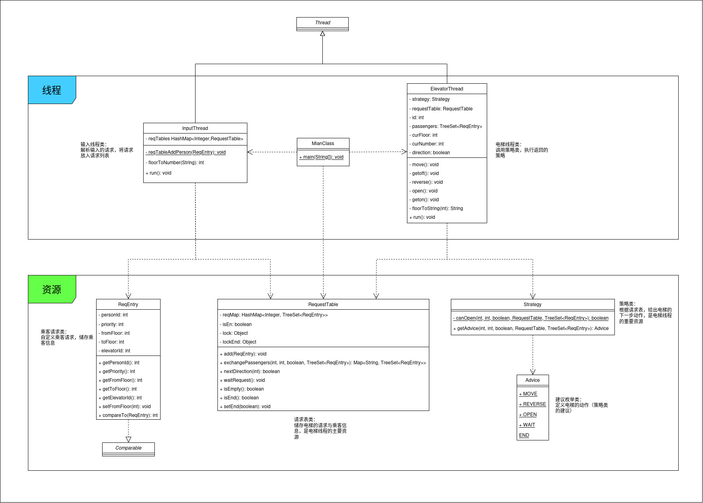
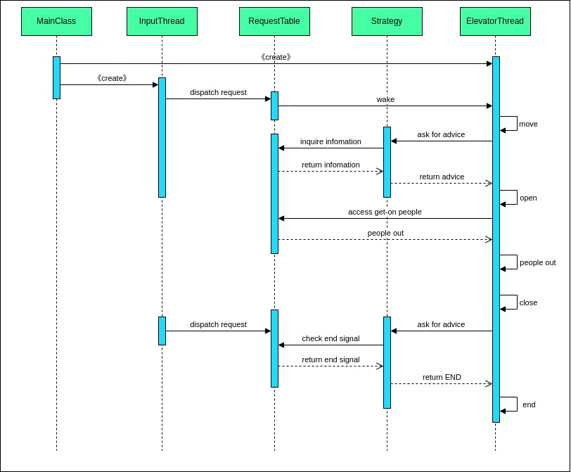
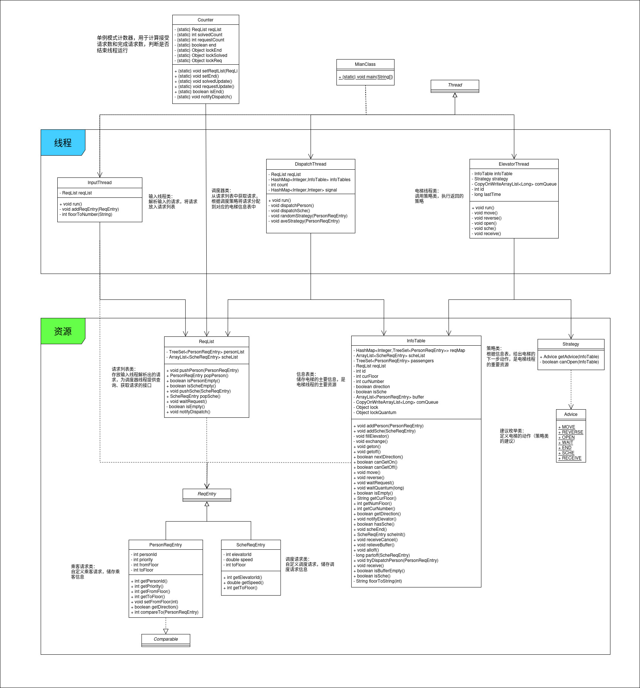
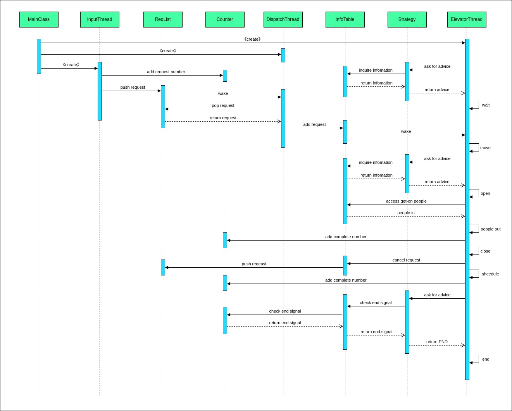
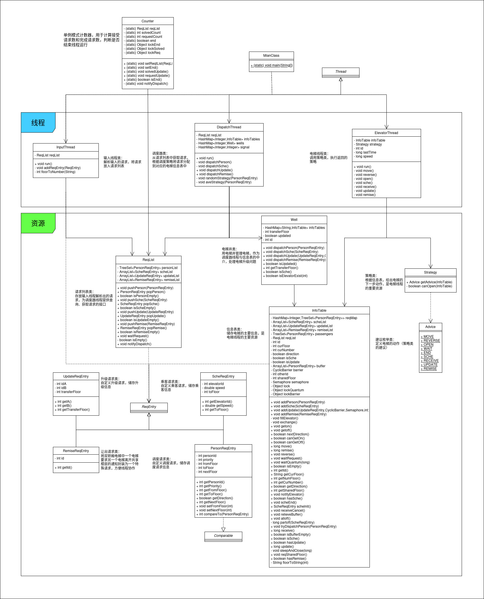
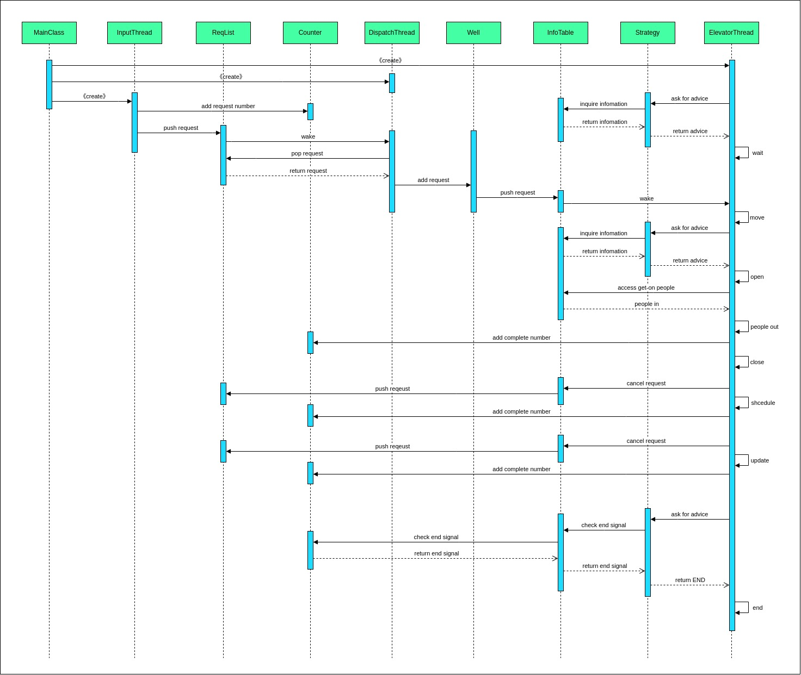

OO Unit2
同步块与锁
同步块与锁的选择
三次作业中，我提交到OO平台的代码都使用synchronized进行同步，这主要基于以下两点原因：
- 并发读/写的强度并不算很大。最终作业中主要有两类共享资源：总的请求池ReqList和各个电梯的信息表InfoTable。ReqList主要被InputThread和DispatchThread访问，在取消receive时会被ElevatorThread访问；InfoTable仅被DispatchThread和对应的ElevatorThread访问。由此看来，并不会出现大量线程同时访问一个共享资源的情况，
- 读/写操作的频率相差不多。分析线程对共享资源的访问，可以发现许多都是加/减元素，并不会出现读远多于写的情况。
故而，太细粒度的锁和读写锁都显得不怎么必要，反而可能增加代码复杂度。所以我选择使用synchronized结合自定义的锁对象进行同步控制。
锁与语句的关系
锁应该保证同步块中对共享资源的处理语句成为原子操作，避免出现多个线程同时访问一个共享资源的情况。我在作业中声明了一些锁对象，用于对不同的共享资源进行更灵活的安全访问，对于涉及同一个对共享资源的处理语句，都需要放在同一个锁对象的同步块中，保障线程安全。
调度器
调度器设计与线程交互
hw5
第五次作业指定了乘客搭乘的电梯，没有调度器的设计，也没有调度器与其他线程的交互
hw6
第六次作业的调度器使用均分策略，调度器主要访问请求列表ReqList和电梯信息表InfoTable。输入线程会将解析出的请求放入请求列表ReqList，调度器取出请求并根据调度策略将请求放入对应电梯的信息表InfoTable，电梯线程取出请求并执行
hw7
第七次作业的调度器仍采用均分策略。为了解决双轿厢电梯的问题，建立了一个电梯井类Well来辅助调度器。此时调度器主要访拥有请求列表ReqList和电梯井Well，电梯井拥有电梯信息表InfoTable。此时调度器线程与输入线程的交互方式不变。在与电梯线程的交互中，调度器线程会根据调度策略将请求放入合适的电梯井，电梯井中进一步将请求放入合适的电梯信息表，最后由电梯线程取出并处理
调度策略
hw5
第五次作业中没有使用调度器
hw6
第六次作业中主要采用了均分策略。为了避免分配请求时跳过所有临时调度中的电梯（围师必阙），导致rtle，我给每个电梯增加了缓冲buffer，调度器分配时实际上只将请求放入buffer。receive操作作为电梯的一个动作，待电梯结束临时调度动作后会检查buffer并决定是否receive。
由于临时调度请求消耗的时间一般较长，将太多请求放入临时调度中的电梯将会影响请求完成时间，降低性能。为此我给每个电梯设置一个标志位，电梯处于临时调度状态时，如果被调度器指定且标志位为0，则将标志位置1，并跳过该电梯；如果电梯标志位为1，则将标志位置0，并将请求分配给该电梯。
hw7
第七次作业中仍然采用了均分策略。与第六次作业不同的是，本次作业出现了双轿厢，且双轿厢电梯的运行速度提升到了0.2s/层。因此我在第六次作业的基础上对乘客请求做了特判，如果请求可以被双轿厢电梯其中之一完成，则将请求直接分配给该电梯，利用双轿厢电梯的速度优势缩短总体时间。
作业迭代
hw5
UML类图

UML协作图

架构设计与变化分析
第五次作业内容比较简单，我采用了生产者-消费者模式进行代码设计。其中输入线程作为生产者，解析并产生请求；电梯线程作为消费者，获取请求并处理。后续的迭代证明生产者-消费者模式在本单元作业中有良好的扩展性
hw6
UML类图

UML协作图

架构设计与变化分析
第六次作业在生产者-消费者模式的基础上增加了单例模式的计数器，用于计算请求数量和完成数量，计数器在第七次作业中也很好地发挥了作用。相比第五次作业，本次作业由于乘客不再指定电梯，增加了调度器的设计，由此代码形成了输入-调度-电梯处理的三层架构，这个架构很好地适应了下一次的迭代。此外为了兼容临时调度请求，为电梯新增了相关动作。
hw7
UML类图

UML协作图

架构设计与变化分析
第七次作业仍是生产者-消费者模式与单例模式相结合。由于增加了双轿厢电梯，此次不仅增加了电梯线程的动作类别，还新增了电梯井类，并改进了调度器线程的运行方式（结合电梯井类进行调度）
三次作业迭代情况总体分析
电梯单元的代码主要有三个线程：输入线程、调度器线程、电梯线程，这三个线程通过访问共享资源进行协作。
可以发现，迭代过程中改动较大的是调度器和电梯相关的内容。这主要是因为业务要求的变化主要体现在请求的增加和改变，为了处理不同的请求，需要调整调度器的调度策略并为电梯增加新的动作和储存容器。
改动较小的则是输入处理以及整体架构。输入端的任务主要是解析请求，当新增请求时只需要增加一个判断分支即可。输入线程-调度器线程-电梯线程的架构已经可以处理电梯单元的任务，所以架构也比较的稳定
双轿厢实现
双轿厢同步
第三次作业要求两部电梯在均完成开门-下客-关门后才可以开始双轿厢改造。我采用了Java 并发工具类CyclicBarrier进行同步。
CyclicBarrier的设计思想是让一组线程在达到某个公共屏障点时彼此等待，直到所有线程都到达该点，然后屏障打开，所有线程同时继续执行。下面详细介绍一下CyclicBarrier的工作机制：
计数器机制： 当构造 CyclicBarrier
对象时，会设置一个初始计数值（双轿厢改造中应为2），这个计数器用来记录还需要有多少线程调用
await() 才能达到设定的数量。当线程调用 await()
时，内部计数器会减少。
- 当最后一个线程调用
await()并使计数器归零时，会触发屏障。此时，所有等待的线程都会被唤醒同时继续执行。 - 如果在屏障构造时提供了一个
Runnable任务，那么在最后一个线程到达并触发屏障时，将先执行这个任务，然后再继续唤醒所有线程。
线程等待机制： 调用 await()
的线程进入等待状态。当计数器未归零时，这些线程会被挂起（通常借助条件变量或等待队列）。这种等待是阻塞式的，而不是忙等待，因此不会持续占用
CPU 时间。
在作业中，使用CyclicBarrier可以方便地使电梯线程阻塞在屏障。当两部电梯都抵达屏障后，执行Runnable任务中的内容，一条龙完成“UPDATE-BEGIN”输出、电梯receive请求取消、“UPDATE-END”输出这三个操作，最后两个电梯线程同时结束升级，作为双轿厢继续处理请求。
轿厢碰撞处理
避免跨越共享楼层：
在第七次作业中，我为乘客请求新增了nextFloor变量，并新增了一个电梯井类，负责处理双轿厢电梯之间的协作。电梯进行决策时关注nextFloor而不是targetFloor，也就是说电梯不需要设计乘客的转乘方式，而是由电梯井进行设计。
当请求分配到一个电梯井时，电梯井会判断井中是否为双轿厢电梯。如果是，则进一步判断乘客请求的起始楼层和目标楼层与双轿厢共享楼层的关系。如果乘客请求跨越了共享楼层，则将nextFloor设置为共享楼层，否则将nextFloor设置为目标楼层。这样一来，就可以保证电梯在根据nextFloor进行动作时不会跨越共享楼层。
避免在共享楼层相撞：
为了节省耗电量，当电梯在共享楼层放下目前最后一位乘客时，我并不让电梯直接离开，但这带来了电梯碰撞的潜在风险。
这里我新增了一个避让请求RemiseReqrEntry，并结合信号量来解决这个问题。电梯A进入共享楼层时需要申请信号量锁。如果信号量为0，则电梯A会往请求列表中加入一个指定电梯B的避让请求并阻塞。电梯B接收避让请求后移动一层并自动释放信号量锁，此时电梯A获得信号量锁，进入共享楼层。
程序bug分析
出现的bug
Unit2中我在强测和互测中均没有出现bug。下面仅总结分析一些完成作业过程中发现的bug
加锁顺序错误
synchronized的加锁具有可重入的特点，但是加锁顺序不正确就可能出现死锁问题。举个例子：
1 | public void methodA () { |
如果线程A和线程B分别同时执行methodA和methodB方法，就可能出现A持lock1等待lock2，B持lock2等待lock1的死锁情况。
当不同方法嵌套调用时，锁重入关系可能变得更加复杂，难以分析。我在发现可能是因为加锁顺序导致了死锁问题时，在草稿纸上列出了各个方法的调用和加锁顺序，最后定位到了bug。
线程协作时操作的原子性
如果说加锁顺序bug是由于锁太多导致的，那么这个bug可以说是锁加少导致的。
在电梯判断下一步动作时，如果发现请求为空且结束信号为false，则会执行wait动作。但是在我最初的设计中，判断是在策略类进行的，而wait是在信息表类进行的，这意味着wait动作不是一个原子操作。如果在电梯判断和执行之间，调度器线程给电梯新分配了请求，那么就会导致电梯线程挂起而不被该请求唤醒。如果该请求恰好是最后一个请求，那么电梯线程就会一直挂起而不处理请求，造成整个程序超时。
由于判断和执行的分离，我无法将整个操作变为一个原子操作，最后只得在真正执行wait之前再次判断请求是否为空。这有点打补丁的味道，但是其实蛮简单有效的。
发现这个bug的时候大为震惊，以为自己一开始的架构设计就有大问题，后来问了问舍友，发现大家都是这样写的，而且都有这个bug，于是安心地打补丁了(bushi)
debug方法
这单元的debug主要还是搭建评测机进行测试，在发现bug后则采用System.out的方法判断各个线程的运行情况，进而发现bug。
评测机的测试强度主要由测试点强度和并发强度保障。测试点依靠随机生成，采用指数分布和平均分布两种生成模式，其中指数分布类似于现实中到达电梯的乘客分布，可以在短时间内产生大量请求，测试电梯在高并发场景下的正确性。另外，在测试时，利用python的multiprocessing.Process方法创建多个进程，一方面提升评测机效率，另一方面提升评测机压力从而提高死锁检测的准确性
心得体会
线程安全
本单元作业中，随着业务越来越复杂，线程安全问题越来越凸显。为了保证线程安全，一方面要仔细分析共享资源以及线程之间的协作关系，合理加锁，保证操作的原子性；另一方面要尽可能简化线程协作，降低出现bug的风险
层次化设计
一个层次分明的架构毫无疑问会带来巨大好处。输入线程-调度器线程-电梯线程的结构，使得我在迭代和查bug时基本只用关注某两个线程如何交互，思路更加清晰（虽然bug还是很难查）。
而要设计层次化的架构，感觉很重要的一点还是合理分解任务，让各部分代码实现不同功能，最后达到低耦合的目的。